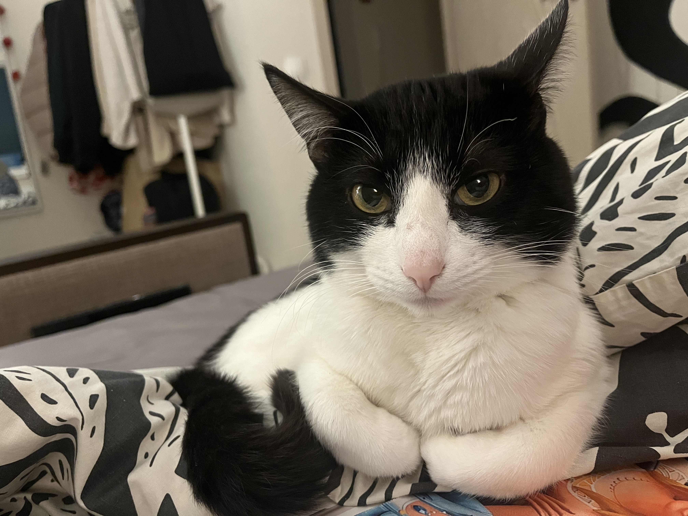

Все чёрно-белые кошки имеют ген белой пятнистости (piebald). Если не вдаваться в подробности, то можно описать его работу следующим образом: во время развития эмбриона этот ген замедляет движение клеток, которые впоследствии будут вырабатывать тёмный меланин, и таким образом подавляет пигментацию на некоторых участках тела. Симметрия рисунка во многом определяется случайным образом и зависит от множества факторов. А вот доля белого цвета напрямую зависит от того, какое сочетание генов досталось чёрно-белому котёнку от родителей.
Чёрно-белые биколоры примерно на одну треть или наполовину покрыты белой шерстью. Голова, спина и хвост обычно чёрные, а воротник на шее, треугольник на мордочке, грудь, живот — белые. Именно к этому подвиду принадлежат «кошки в смокинге» — tuxedo cats.
В то время как их наряд может показаться мужским, есть огромное количество кошек в «смокинге». В отличие от ситцевых или черепаховых кошек, которые обычно являются самками, смокинг может легко «примерить» любой пол.
Представители семейства кошачьих имеют для обоняния восемьдесят миллионов обонятельных клеток и ощущают даже самые слабые запахи, в то время как у человека таких клеток всего двадцать миллионов и нюх у него в четырнадцать раз хуже, чем у кошек.
В сравнении с другими животными, у котов гибкая спина, благодаря особому строению позвоночнику. У котов уникален отпечаток носа. Из-за особого расположения ключиц, котики могут пролезть в любое отверстие, в которое поместится голова. В спокойном состоянии сердце пушистика бьется 100-130 ударов в минуту.
У кошек потеют только подушечки на лапках. Кошки могут издавать около 100 различных звуков – это в десять раз больше, чем собаки. Кошки довольно дальнозорки и хорошо видят, начиная с расстояния не менее 70 см. Кошки втрое чувствительней к громкости звуков.
Кошки — социальные существа. Они привязываются к хозяину, проявляют по отношению к нему дружелюбие и ласку. Способны освоить правила поведения в доме и следовать им, но нуждаются в своей территории и уважении личного пространства.
Если вы нравитесь кошке, то она будет рада вашему приходу домой, будет тереться о вас своей головой и при этом громко мурчать. Так же, если кошка катается на спине пузом вверх, это значит, что она привлекает ваше внимание и демонстрирует то, что доверяет вам.
Если кошка пристально вглядывается в ваши глаза, смотрит на вас с интересом и медленно моргает, это не должно вас настораживать. В этот момент она будто «целует» вас и говорит: «Я люблю тебя»! Такое поведение свидетельствует о привязанности и о том, что кошка чувствует себя с вами спокойно и в безопасности.